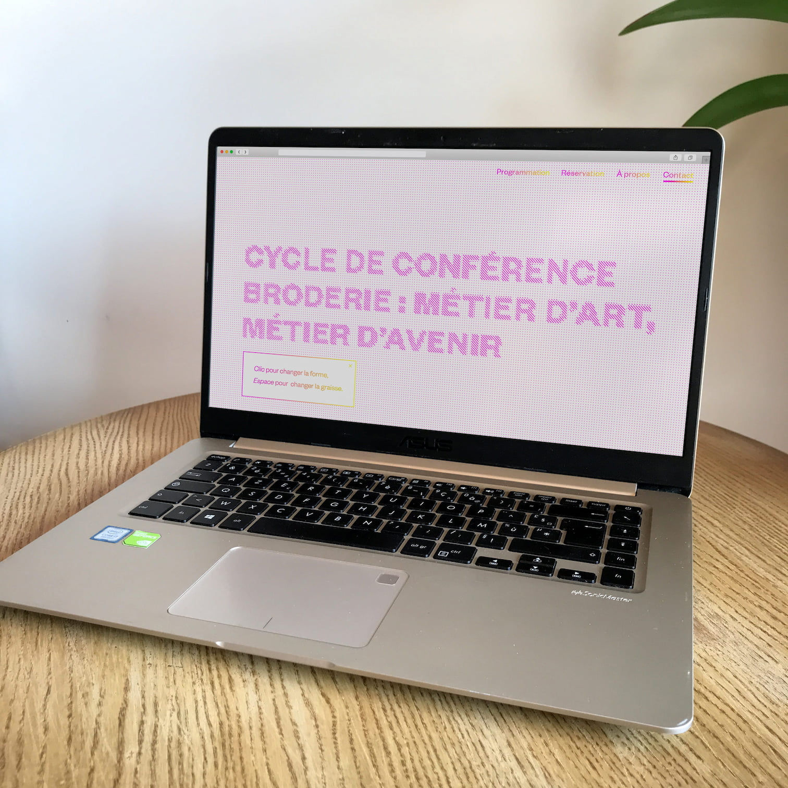
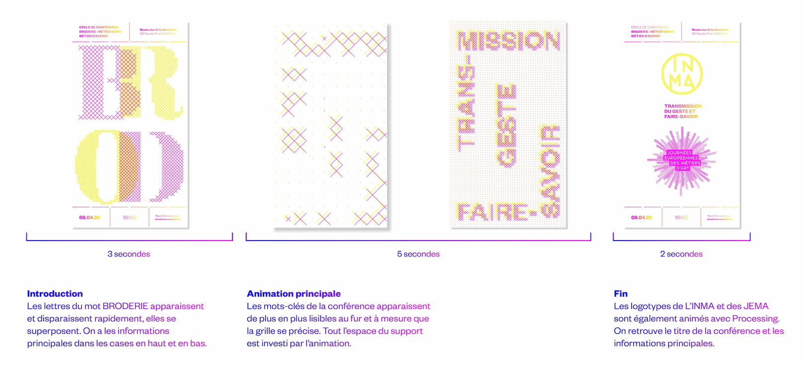
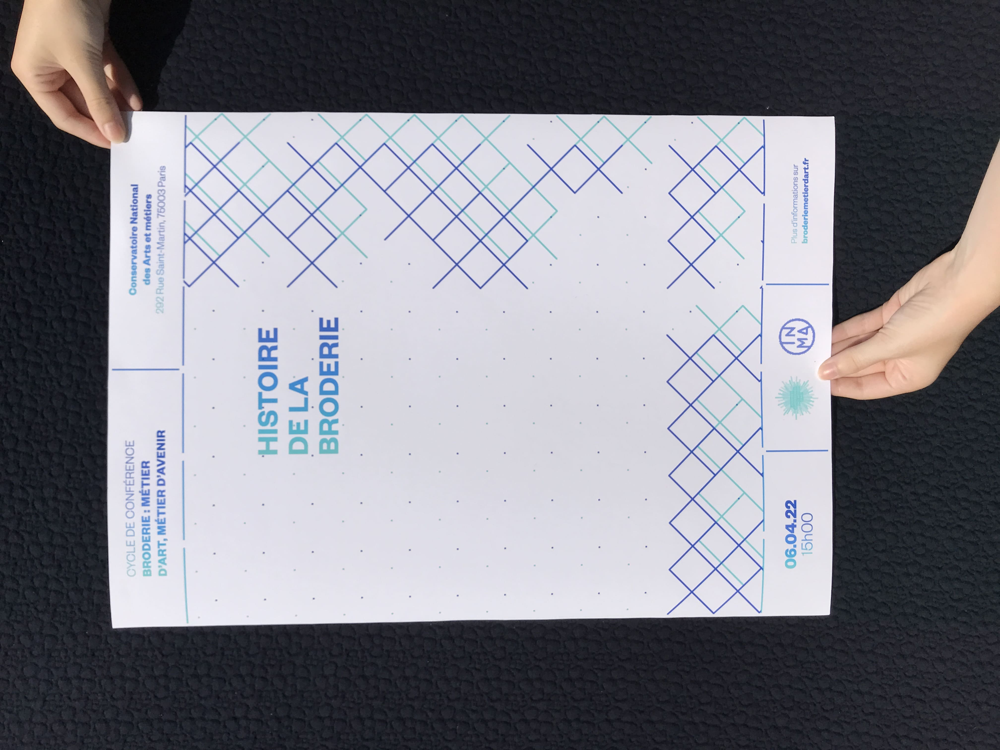
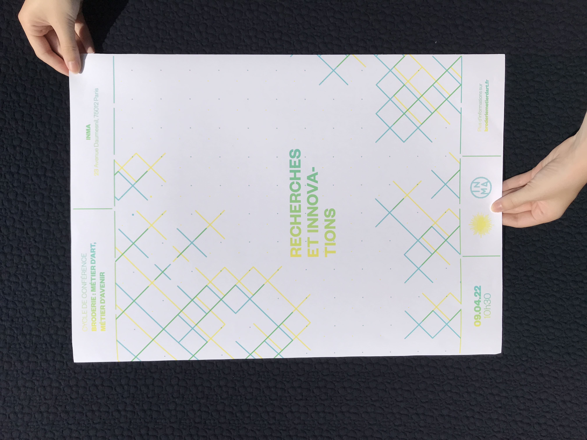
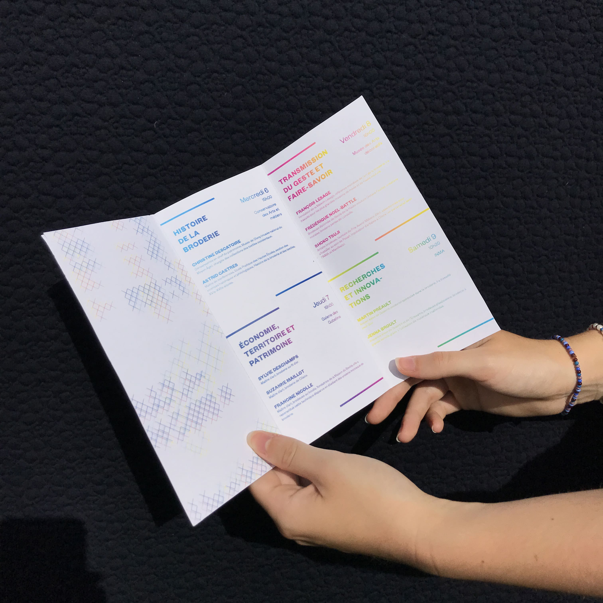
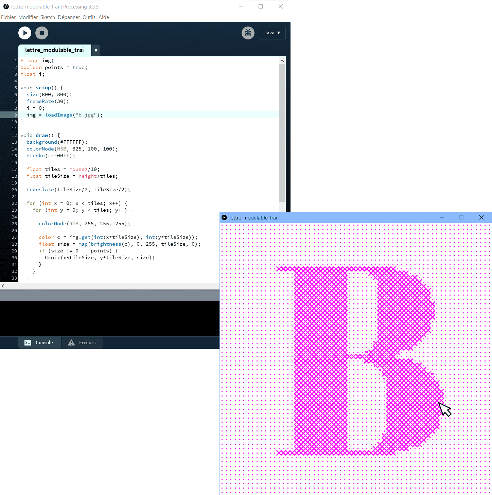
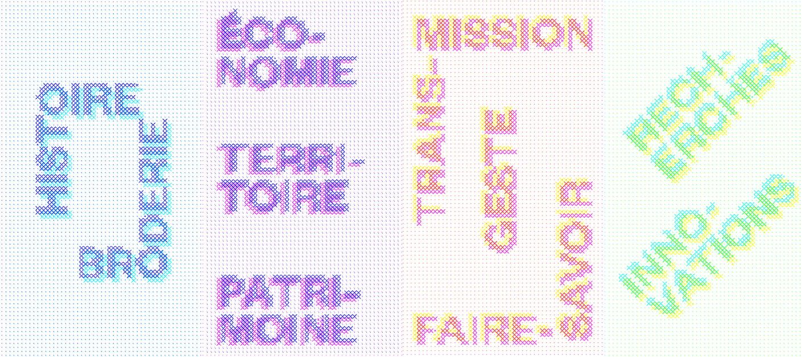
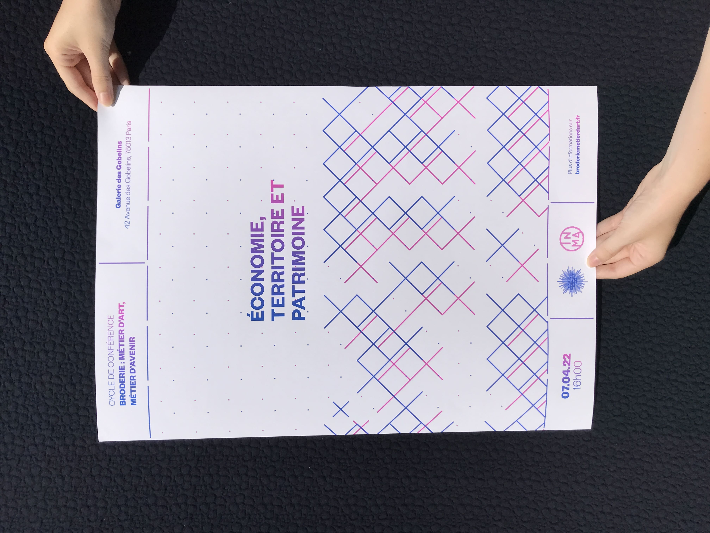
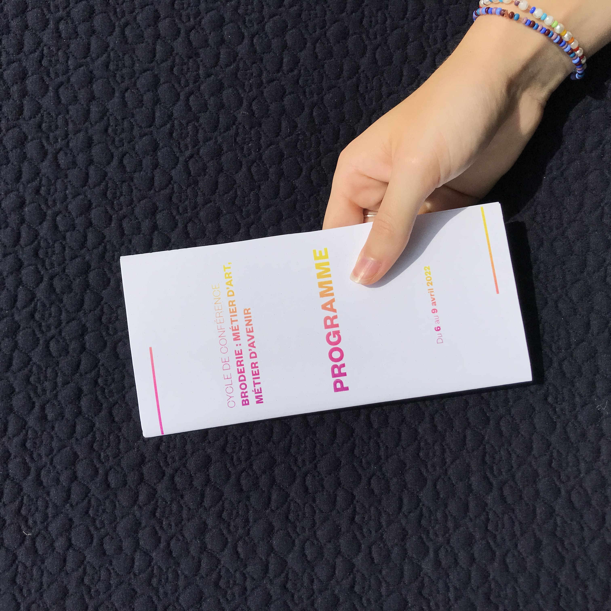
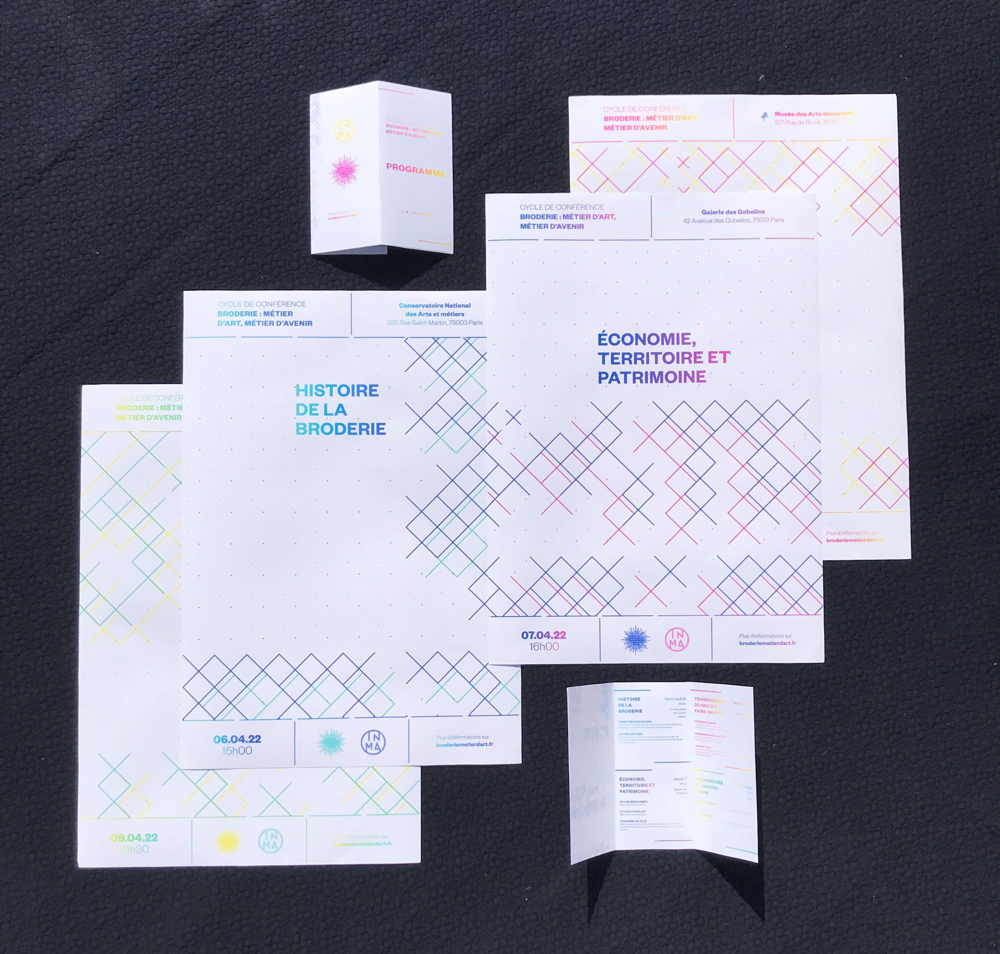

broderie.exe
Identité - Webdesign - Motion design
Projet MADE : Identité visuelle pour un cycle de conférence fictif sur la broderie
Processing, After Effects
L’objectif de ce cycle de conférence organisé par l’INMA est de préserver le savoir-faire de la broderie, de le remettre en lumière. L’artisanat d’art est un secteur porteur et innovant en termes d’emploi mais qui reste largement méconnu. La broderie a une image poussiéreuse et souffre de stéréotypes. On remarque le côté dépassé des communications en rapport avec la broderie, qui donne un point de vue biaisé, décalé de la réalité de ce métier d’art.
Pour montrer que la broderie est actuelle, mon projet se base sur les similitudes entre le savoir-faire de la broderie et la pratique du code. L’identité que j’ai conçue est interactive, basée sur un programme Processing qui permet de générer les motifs.









